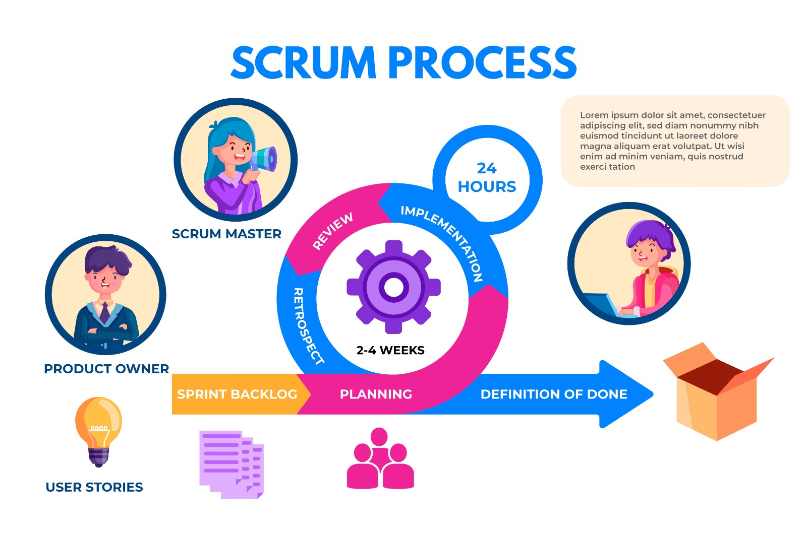

Kanban ¿Qué es?
Se trata de un método visual de gestión de proyectos que permite a los equipos visualizar sus flujos de trabajo y la carga de trabajo. En un tablero Kanban, el trabajo se muestra en un proyecto en forma de tablero organizado por columnas. Tradicionalmente, cada columna representa una etapa del trabajo.

Los principios de Kanban
Kanban es lo suficientemente flexible como para adaptarse a las prácticas centrales de tu equipo de trabajo.
En lugar de cambiar todo de una vez, busca cambios progresivos para lograr procesos de tu equipo que evolucionen con el tiempo.
Kanban no tiene roles integrados y puede funcionar con la estructura y los procesos actuales de tu equipo.
Con Kanban, se alienta a los miembros del equipo a participar, proponer nuevas formas para lograr que los procesos evolucionen y emprender nuevas iniciativas de trabajo.

Como implementar la metodología Kanban
El tablero Kanban eventualmente contendrá todos los elementos de trabajo, incluido el trabajo finalizado. Sin embargo, por el momento se recomienda empezar con un tablero en blanco. Si usas una herramienta de gestión del trabajo como Asana, asegúrate de estar en la vista de Tablero.
Tradicionalmente, las columnas del tablero Kanban representan las distintas etapas del trabajo. Aunque las columnas que crees dependerán de tu equipo, te mostramos a continuación los tipos de columnas más comunes:
- Trabajo pendiente, Bandeja de entrada o Nuevo
- Listo o Prioritario
- En progreso
- En espera
- Finalizadas
En un tablero Kanban, cada tarea está representada por una tarjeta. Asegúrate de que los títulos de las tareas sean concretos. Recomendamos empezar con un verbo para que tu equipo sepa exactamente qué debe hacer.
Si usas una solución virtual de gestión del trabajo, también puedes agregar información adicional, contexto y archivos a las tarjetas Kanban. Luego, usa las etiquetas para dar seguimiento a los metadatos, como la duración o la priorización de la tarea.
Un elemento central de la gestión del flujo de trabajo con los tableros Kanban es hacer avanzar el trabajo por las diferentes etapas. Puedes hacerlo manualmente arrastrando y soltando tareas, o puedes buscar una solución virtual de gestión del trabajo que te permita automatizar este proceso.
En teoría, podrías usar el mismo tablero Kanban virtual de forma indefinida. Debido a que los tableros Kanban dan seguimiento al trabajo a través de un proceso continuo, no hay motivo alguno para dejar de usar tu tablero actual. Sin embargo, en algunos sistemas como Scrum, con frecuencia crearás tableros Kanban para cada sprint nuevo.

Prácticas de la metodología Kanban
Una de las principales ventajas de Kanban es que puedes visualizar cómo el trabajo “avanza” a través de las etapas. Una tarjeta Kanban de tarea comenzará su viaje en el lado izquierdo de tu tablero y, a medida que tu equipo trabaja en ella, recorrerá lentamente las siguientes etapas hasta que aterrice en la columna Finalizadas.
Como metodología ágil, Kanban se centra en un principio de entrega temprana, lo que implica que las tareas deben moverse rápidamente de una columna a otra en lugar de estancarse en un estado ambiguo de “trabajo en progreso”.
Gestionar y mejorar el flujo de trabajo te permitirá controlar el tiempo predestinado para el trabajo y así poder reducir el tiempo de entrega (el tiempo que pasa entre el inicio de una tarea hasta que llega a la columna Finalizadas de tu tablero Kanban).
Debido a la rapidez con la que se mueven las tareas en Kanban, asegúrate de que tu equipo haya establecido y comunicado claramente las convenciones. Las políticas de tu proceso deben guiar a tu equipo en la implementación de la metodología Kanban.
En Kanban, necesitas recopilar comentarios de dos grupos distintos: tus clientes y tu equipo.
- Clientes: Recopila comentarios de tus clientes sobre la calidad y eficacia de la solución que produjo el equipo.
- Equipo: Realiza consultas frecuentes con el equipo sobre el proceso de ejecución de un marco Kanban. ¿Cómo se sienten con los resultados?
Significa que otros sistemas podrían funcionar bien junto con Kanban. Ya sea Scrum o alguna otra metodología, debes estar siempre dispuesto a colaborar, experimentar y desarrollar tus procesos si es necesario.